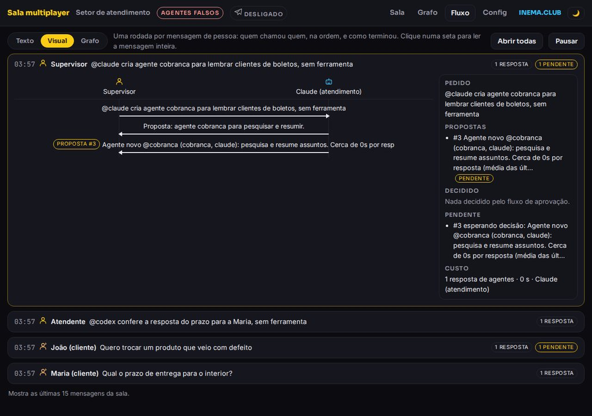
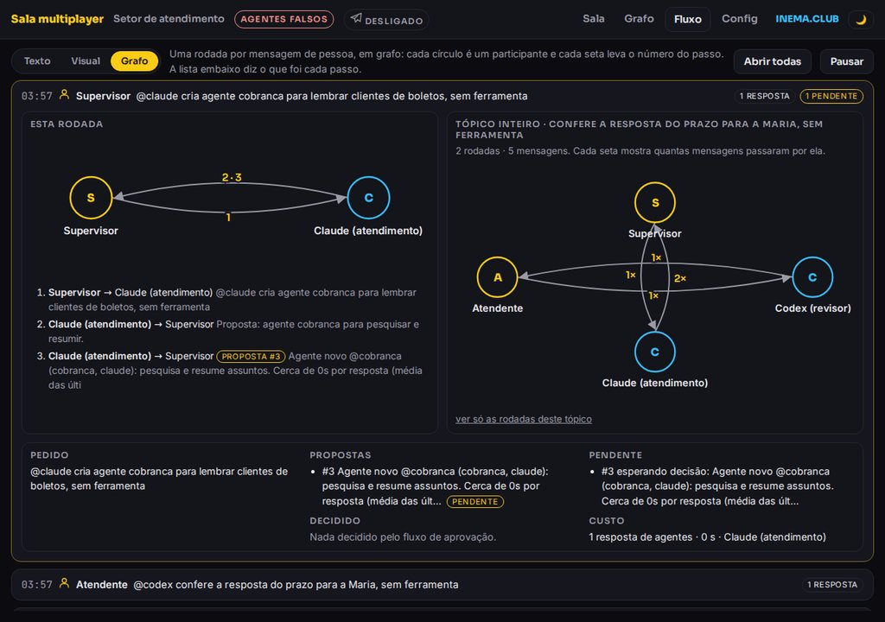
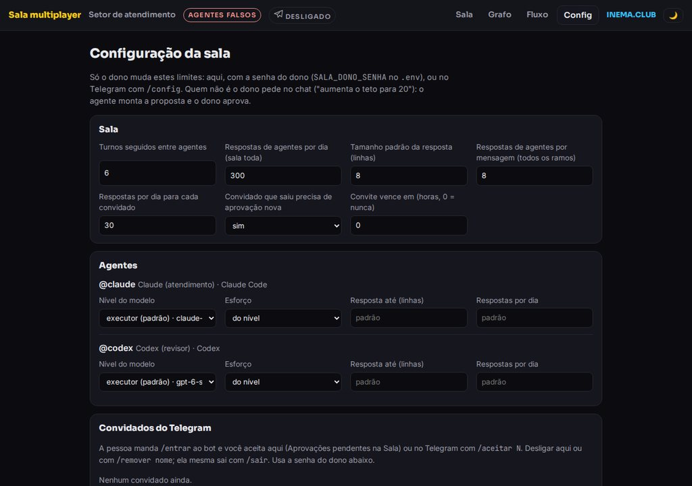
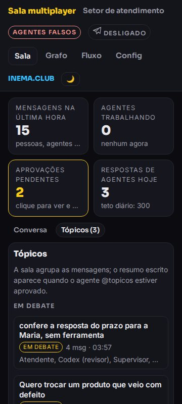

Multiplayer Agentic · v0.8
Pessoas e agentes de IA na mesma sala
Você, sua equipe, o Claude, o Codex e quem escreve no seu bot do Telegram numa conversa só, com um painel que mostra tudo ao vivo.

Você, sua equipe, o Claude, o Codex e quem escreve no seu bot do Telegram numa conversa só, com um painel que mostra tudo ao vivo.
A Sala Multiplayer é um programa pequeno que roda no seu computador e junta numa conversa só você (ou sua equipe), dois agentes de IA (Claude Code e Codex) e quem escreve para o seu bot do Telegram. Serve para quem quer trabalhar com agentes junto de outras pessoas, ou montar um atendimento em que a IA rascunha e um humano aprova antes de a resposta sair. Os agentes rodam pela sua assinatura, sem API. Para usar, você precisa de Node 24 e dos CLIs do Claude Code e do Codex instalados e logados.
Primeira versão prática do conceito Multiplayer Agentic: em vez de cada pessoa falar sozinha com a sua IA, todo mundo fala no mesmo lugar.
Chame @claude ou @codex na conversa. Os dois respondem na sala, pela sua assinatura do Claude Code e do Codex.
Um bot só recebe as mensagens. Os agentes respondem por ele com o nome na frente ("Claude: ...").
No modo atendimento, a resposta ao cliente vira rascunho e só sai depois que alguém da equipe aprova.
Peça "cria um agente que revise meus textos". O Claude devolve uma proposta com custo e tempo estimados, e o agente só entra depois que o dono aprova.
A conversa vira tópicos na coluna da direita. Clique num deles para ver o resumo: o que foi decidido, o que está pendente, quem participou e quanto custou.
Cada mensagem vira um diagrama de sequência ou um grafo com setas numeradas: quem chamou quem, em que ordem e como terminou. Ao lado, o que foi pedido, decidido e o que ainda espera.
Toda mensagem entra na sala, vai para quem foi chamado e aparece no painel na hora.
pessoa: você e seus agentes; o bot ignora quem não é o dono. atendimento: clientes escrevem no Telegram, o Claude atende com a base de respostas, o Codex revisa quando a equipe pede, e um supervisor ou atendente aprova.
O agente pede com uma linha FERRAMENTA: nome | entrada e a sala roda. Exemplos: base (base de respostas), chamado, notas, hora.
Entre agentes, só o @id no começo da frase chama ("@codex, revisa isto?"). Citar o nome no meio do texto não acorda ninguém. Resposta que só confirma ("combinado, aguardo o Dono") não chama ninguém e ganha o selo "só confirma". Um agente só chama de volta quem falou com ele se fizer uma pergunta.
Até 10 turnos seguidos entre agentes (6 no atendimento), até 12 respostas de agentes por mensagem somando todos os ramos (8 no atendimento), um limite por dia (400 e 300), um teto por convidado (30) e, se quiser, por agente. O aviso de teto sai uma vez por mensagem.
Limites, modelo e esforço de cada agente e regras dos convidados ficam na tela Config, com a senha do dono, ou no Telegram com /config. Quem não é o dono pede no chat e o dono aprova.
O painel só abre nesta máquina (127.0.0.1). Mensagem de outra pessoa é tratada como dado, nunca como ordem. Os agentes rodam sem as ferramentas próprias do CLI, sem MCP e numa pasta vazia.
A demonstração roda só com o Node. Para os agentes de verdade, os dois CLIs precisam estar logados na sua conta.
A sala usa o SQLite que já vem no Node (node:sqlite), sem dependências para instalar.
# conferir a versão node --version # v24 ou mais
Instalados e logados pela assinatura. A sala chama os dois CLIs; não usa chave de API.
# os dois precisam responder claude --version codex --version
Sem bot, a sala funciona só pelo painel. Com bot, você precisa do token do @BotFather.
# no Telegram @BotFather → /newbot
Comece pela demonstração, que usa agentes falsos e não gasta nada. Depois ligue os agentes de verdade e, por último, o Telegram.
Não há npm install: o projeto não tem dependências.
git clone https://github.com/inematds/sala-multiplayer cd sala-multiplayer
Abre o perfil de atendimento com agentes falsos, para você ver as quatro telas funcionando: clientes, uma proposta de agente novo, tópicos e o fluxo visual. A demonstração começa limpa a cada início e não mexe nos dados da sala de verdade.
npm run demo # abra http://127.0.0.1:4601 npm test # 46 testes, sem chamar agentes nem Telegram
Escolha o perfil. No painel, escreva @claude ou @codex para chamar um agente.
npm run pessoa # você e seus agentes → http://127.0.0.1:4600 npm run atendimento # setor de atendimento → http://127.0.0.1:4600
No @BotFather, crie o bot e copie o token. Para o bot ler mensagens em grupo, desligue a privacidade.
/newbot # escolha o nome e copie o token /setprivacy # escolha o bot → Disable
O .env fica fora do git. Descubra seu id numérico com o @userinfobot. No atendimento, preencha também os ids do supervisor e do atendente.
cp .env.exemplo .env # SALA_TELEGRAM_TOKEN= token do @BotFather # SALA_DONO_TELEGRAM_ID= seu id # SALA_SUPERVISOR_TELEGRAM_ID= / SALA_ATENDENTE_TELEGRAM_ID= (atendimento)
Bot do Telegram não pode puxar conversa. Sem o /start, ele não consegue avisar das aprovações. Depois rode o perfil de novo: o selo do Telegram no topo do painel fica "ligado".
/start # cada pessoa da equipe, uma vez npm run atendimento # ou npm run pessoa
No atendimento, o rascunho aparece no topo do painel. Aprove ali (dá para editar antes) ou pelo Telegram.
/aprovar 3 # envia o rascunho 3 ao cliente /recusar 3 # descarta o rascunho 3
A pessoa manda /entrar ao bot, em conversa privada. Você recebe o pedido no Telegram, e ele também aparece em "Aprovações pendentes" no painel (aceitar ali pede a senha do dono). O convidado conversa e chama os agentes, mas não aprova nada nem muda a configuração, e tem teto próprio de respostas por dia. Para desligar, use /remover ou o botão na tela Config.
/entrar # a pessoa, no bot /aceitar 7 # você: "Pedido 7: Ana (@ana) quer entrar" /recusar 7 # ou recusa /remover ana # desliga; ela mesma sai com /sair
Escreva na sala o que você quer. O Claude não cria nada sozinho: devolve uma proposta (nome, papel, motor, ferramentas, teto por dia) com custo e tempo por resposta medidos nas respostas anteriores. Sem o @topicos, a sala agrupa as mensagens em tópicos mas não escreve resumo. Com ele aprovado, cada tópico ganha resumo, decidido e pendente, e cada mensagem custa uma chamada a mais da assinatura.
# na sala @claude cria um agente que revise meus textos @claude cria um agente que organize a conversa em tópicos # id: topicos /aprovar 4 # ou no painel, em Aprovações pendentes
Na tela Config, com a senha do dono (SALA_DONO_SENHA no .env), ou pelo Telegram. As mudanças valem na hora.
/config # mostra tudo /config teto_rodada 12 # respostas de agentes por mensagem /config agente.claude.nivel super
Os perfis em perfis/ definem quem participa, a personalidade de cada agente, as ferramentas, a rota padrão, quem aprova e os tetos. Copie um e rode com o nome novo.
cp perfis/atendimento.json perfis/vendas.json node server.mjs --perfil vendas
Tudo atualiza ao vivo, sem recarregar. As telas cabem sem rolagem de 360 a 1920 px de largura.

/): no topo, mensagens da última hora, agentes trabalhando, aprovações pendentes e respostas do dia. À esquerda, os participantes. No meio, o chat, todo numa coluna: cada mensagem tem um avatar e uma borda colorida (as suas em branco, pessoas em amarelo, agentes em azul, sistema em vermelho). À direita, os tópicos: clicar num deles filtra o chat e abre o resumo no alto (decidido, pendente, quem participou, custo, "Ver o fluxo").
/fluxo?v=visual): uma rodada por mensagem de pessoa, com uma coluna por participante e uma seta por resposta. Marcas mostram proposta, teto, falha e "só confirma". Ao lado, a faixa de resolução: pedido, propostas, decidido, pendente e custo.
/fluxo?v=grafo): a mesma rodada em grafo. Cada círculo é um participante e cada seta leva o número do passo; a lista embaixo diz o que foi cada passo. Ao lado, o grafo do tópico inteiro: todas as rodadas daquele assunto, com quantas mensagens passaram por cada seta. Bom para ver laços entre agentes de relance.
/fluxo): tudo o que entra e sai, rolando na ordem em que acontece. O botão Texto | Visual | Grafo troca o modo; "Todos" liga de novo todos os filtros; no Visual e no Grafo, "Abrir todas" abre todas as rodadas de uma vez; Pausar congela a lista.
/grafo): quem conversa com quem. A linha engrossa com o volume e uma bolinha corre por ela a cada mensagem.
/config): limites da sala, de cada agente e dos convidados, e o botão para ligar ou desligar cada convidado do Telegram. Só o dono, com a senha.

A v0.8 está publicada. O que já entrou e o que vem depois:
/config no Telegram, que só o dono muda.@ só no começo da frase, "só confirma" não chama ninguém, estado da sala no prompt dos agentes; convidado pelo Telegram com /entrar e /aceitar.@topicos escreve o resumo quando aprovado.@conselho-gestao reúne o conselho e devolve a síntese.